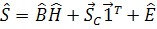
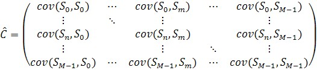
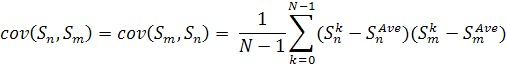
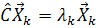
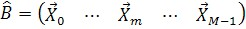
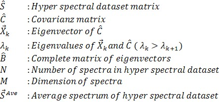
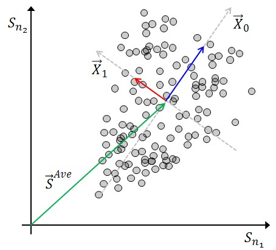

|
主成分分析（数学）
|
主成分分析（PCA）是一种多变量分析。该分析计算新的正交基，并将原始数据变换到此基中。与其他技术类似，基方程 光谱叠加（数学） can be used as a starting point.

唯一的区别是右侧的符号具有不同的含义。常光谱由高光谱数据集的平均值计算（参见 Average 光谱 (数学)). 基光谱矩阵由协方差矩阵具有最高特征值的特征向量填充。混合值仅通过新的坐标变换计算。
特征向量和特征值通过以下方程计算。





See also
Remarks
特征向量基
由于协方差矩阵的性质，特征向量彼此正交。PCA可以看作是旧坐标系的平移和旋转。

如果所有特征向量都作为新基，则没有信息损失。通常只选择具有最高特征值的特征向量。在这种情况下，并非保留了完整信息。目标是选择尽可能多的特征向量以保留测量信号，但选择尽可能少的特征向量以去除噪声。
主成分分析可用于降维以进行后续分析，或仅作为噪声滤波器。
特征值和特征向量
特征值可以看作数据在特征向量方向上的方差。在此上下文中，方差的含义不是误差，而是内容信息。
唯一性
对于给定的高光谱数据集，主成分分析始终给出相同的结果，但具有不同浓度分布的类似数据集将导致不同的基。特征向量没有内在的物理意义。此外，特征向量的元素和混合值可以为负值。